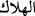
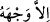
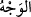
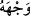
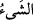

88. Allah ile birlikte başka bir tanrıya tapıp yalvarma! O’ndan başka tanrı yoktur.
O’nun zâtından başka her şey yok olacaktır. Hüküm O’nundur ve siz ancak O’na
döndürüleceksiniz.
“Allah ile birlikte başka bir tanrıya tapıp yalvarma!”
Kâşifî der ki: Bu âyetin muhâtabı Hz. Peygamber’dir, murâd edilen ise ümmettir. Hz.
Peygamber’e hitâb edilmesinin faydası, müşriklerin onun kendileriyle muvâfakatinden
ümitlerini kesmek içindir.
Bu ifâde açıkça göstermektedir ki, “Allah ile birlikte başka bir tanrıya tapıp
yalvarma!” şeklindeki yasaklama, böyle kötü bir fiilin kendisinden sâdır olması asla
mümkün olmayan bir kimseye hitâben söylenmiştir.
“O’ndan başka tanrı yoktur. O’nun zâtından başka her şey” yâni insan, hayvan, cin,
melek, hûrî, cennet, cehennem, arş, kürsî ve diğerleri hepsi “yok olacaktır.”
“__WORD__ (helâk olma)”, burada var olan bir şeyin bu âlemden doğrudan hükümsüz ve
geçersiz olması anlamına gelir. Yâni bir şeyin bir an bile olsa tamamıyla geçici (fânî),
geçersiz (bâtıl) ve yok (ma’dûm) olacağını ifâde eder.
“__WORD__ Ancak Allah’ın zâtı kalacaktır. Çünkü O’nun zâtının varlığı kendiliğindendir
ve gereklidir (vâcibü’l-vücûd). Onun dışındakilerinin var oluşları ise ârızîdir
(mümkinü’l-vücûd); yokluk ve helâk ile karşı karşıyadır. “__WORD__ (yüz)” ile burada
Allah’ın zâtı kasdedilir.
Ebü’l-Âliye der ki: “Allah için yapılan amellerin dışındaki her şey helâk olur.”
Haberde vârid olmuştur ki: Kıyamet günü dünyâ getirilir ve denilir ki: “Ondan Allah
için olanları ayırınız.” Allah rızâsı gözetilerek işlenen ameller ayrılır. Sonra
diğerlerinin cehenneme atılması emredilir.[154]
Âriflerin büyüklerinden biri demiştir ki: “__WORD__ kelimesindeki zamir, “__WORD__
kelimesine mütealliktir. Mânâsı şöyledir: Haddi zâtında herşey fânîdir. Ancak yüzü ve
yönü (vechi) Allah Teâlâ’nın cihetini takip eden bundan müstesnadır. Çünkü mümkinü’l-
vücûd olan bir varlığın, vücûdu Hakk’ın vücûduna göre ârızî bir mâhiyet taşır.
Dolayısıyla böyle bir varlığın mahiyeti, hariçte ma’dûm, itibârî olup kendi zâtı ve var
oluşu açısından bir vücûd, varlık kabul etmez. Ve varlığı (vücûd) da mevcut olup kendi
mâhiyeti yönünden bir yokluk (adem) kabul etmez.
Ve yine bazıları demiştir ki: Âyân, -her ne kadar hakîkat, vücûdî taayyünât itibarıyla
vucûdun (varlığın) kendisi (aynı) olsa da- taayyünât bakımından yokluktur (ademiyet).
Dolayısıyla kulağın âriflerin şu sözünü işitince, bunu kabul ile karşıla; “mahlûkât’ın
kendisi ademdir; var olan külliyyen Allah’tır.”
Mağribî der ki:
Senden gayri bir şey yoktur, ama var görünür
Bu, susuz kimsenin çölde gözüne serap görünmesi gibidir